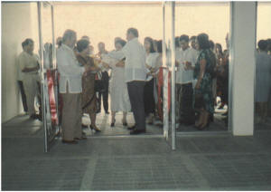
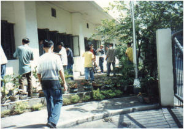
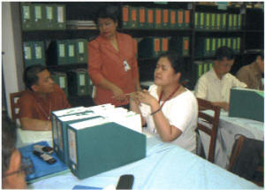
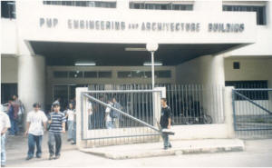
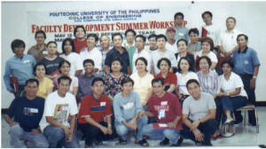
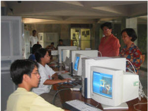
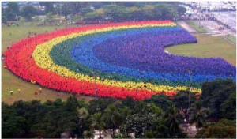

Overview
The College of Engineering, formerly known as the College of Engineering and Architecture celebrates its 25th year on the Centenary of PUP. The CEA was acknowledged by many as the University's flagship college. Here are the highlights of the growth of the College from the Faculty of Technology to what and where it is now.
1978
Through PD 1341, The Philippine College of Commerce was converted into a chartered state university and accordingly renamed Polytechnic University of the Philippines. This led to the broadening of course offerings and the streamlining of the University's administrative organization. The Faculty of Technology replaced the Center of Skills and Rural Industries Development (CSRID) with Professor Banaag Villaflor as the Officer-in-Charge, offering three ladderized programs in SY 1979-1980 namely the Bachelor in Computer Engineering Technology (BCET), Bachelor in Electrical Engineering (BEE), and Bachelor in Electronics Engineering (BEL).
1980
The Institute of Technology was created and Dr. Romulo M. Ricafranca was designated as Director. Three additional courses were offered: Bachelor in Mechanical Engineering (BME), Bachelor in Industrial Communication Engineering (BICE) and Bachelor in Civil Engineering (BCE). Engr. German A. Padua was appointed Area Chairman for Professional Engineering and Mr. Banaag Villaflor as Area Chairman for Non-degree program.
1984
Engr. German A. Padua was appointed Director of the Institute.
1985
Bachelor in Industrial Communication Engineering was replaced by Bachelor in Industrial Engineering and Bachelor in Electronics Engineering was replaced by Bachelor in Electronics and Communications Engineering to conform with the PRC Board of Electronics and Communications Engineers' requirement for licensure examination.
1986
Under the leadership of Dr. Nemesio E. Prudente, the word "Science" was included in the titles of each degree programs as follows: Bachelor of Science in Civil Engineering, Bachelor of Science in Computer Engineering, Bachelor of Science in Electrical Engineering, Bachelor of Science in Electronics and Communications Engineering, Bachelor of Science in Industrial Engineering and Bachelor of Science in Mechanical Engineering. This is to align with the standards set by the Technical Panel for Engineering Education (TPEE).
1987
This was a significant year. The Institute was renamed College of Engineering and Architecture with the addition of another degree program leading to Bachelor of Science in Architecture.
1989 – 1990
A Basic Design Team headed by Dr. Masazumi Kumagai visited the University to discuss with University officials the project "Providing Equipment for Educational Strengthening in the PolytechnicUniversity of the Philippines" for the existing programs as well as the proposed degree programs in Chemical, Sanitary, Mining and Geodetic Engineering.
Engr. Estelita Del Rosario was designated Acting Dean of CEA in addition to her designation as Asst. Director of the Department of Research, Planning and Development effective May 1989. Among the developments that took place during this time are as follows:
- Signing of Memorandum of Agreement between PUP and the Marcopper Mining Corporation for a Professorial Chair in Engineering.
- Hiring of highly qualified part-time faculty members in different engineering disciplines.
- Face lifting and refurnishing of CEA Offices and Faculty Room located at the second floor dome of the MainBuilding.
- Consultation meetings of CEA Officials with Archt. Rogelio Granda re-the proposed CEABuilding.
- Preparation of Selection Criteria for Scholarships and Training Programs for the College of Engineering and Architecture Faculty.
- PUP President Dr. Nemesio E. Prudente and Dr. Masamuzi Kumagai signed a Memorandum of Understanding on December 5, 1989 paving the way for the construction of the 96 million four-story Engineering and Architecture building.
1990 – 1992
Engr. Alberto Cañete was designated as Dean of the College of Engineering and Architecture. Among the developments were:
-
Ground-breaking ceremonies held on
March 7, 1990 for the construction
of the Engineering and
ArchitectureBuilding. Construction
was finished in December 1991.

Inauguration and ribbon cutting was held on January 29, 1992.
- Japan International Cooperation Agency's (JICA) equipment grants worth Php 150M arrived January to March 1992. Japanese experts gave lectures on equipment use to about a hundred faculty on the last week of May 1992.
- Three faculty members were sent to Japan to attend training programs relative to the JICA Grant - Aid Project.
1992 – 1993
Dr. Proculo Hugo was designated as Acting Dean by PUP Acting President Jaime Gellor on June 21, 1992. On July 27, 1992, Engr. Manuel Melchor Bongulto was designated Acting Dean by President Dr. Zenaida A. Olonan. Other developments were:
- Engr. Jaime San Andres was designated new CEA Chief of Laboratories
- Turn-Over Ceremony of JICA's donation to PUP and visit of CEA facilities was held on August 28, 1992.
- Publishing of the CEA Spectrum
- Organization of the CEA Quiz Circle
- Inspection of the CEA Grant-in-Aid project after one year
- More faculty members availed of training grants abroad.
1993 – 1998
Engr. Dante Gedaria was designated Dean of the College ofEngineering effective Oct. 15, 1993. Among the developments were:
- ECE Department produced its First Board Topnotcher in the person of Michael Galvez.
- Renovation of the ceilings of the rooms at the fourth floor of CEABuilding.
- Arrival of three (3) JICA Repair Team Experts (Dec. 16-21, 1996) to look into some non-functioning equipment
- Organization of the College of Engineering and Architecture Student Society for Research and Development.
- Five degree programs in the College passed the Level I Accreditation by the Accrediting Agencies of Chartered Colleges and Universities of the Philippines (AACCUP). These are the CE, EE, ECE, IE and ME.
1998 – 2003
Engr. Vicky S. Cruz was designated as the First Woman Dean of College of Engineering and Architecture on November 18, 1998. Among the initiatives and developments were:
-
Clearing and landscaping of the
grounds of the College of
Engineering and Architecture
building.

- Repainting of floors, window grills and fence grills, repair of electrical fixtures, water pumps, etc; all activities done by students as part of their summer workshops
- Repair and rehabilitation of all the comfort rooms of CEA with students enrolled in Civil Engineering Technology as their practicum job.
- Repair of the air conditioning units at the AVR and other offices by the students.
- First Level Accreditation of the Architecture and Computer Engineering programs.
-
Restatement of the College' vision,
mission goals and objectives.

- Level II accreditation of the CE, ME, IE, EE, CoE and ECE programs
- Separation of the Dept. of Architecture from CEA thus renaming the College as College of Engineering.
- Revision of the ladderized curriculum of all six programs to better address the needs of the times.
- Strengthening of the faculty profile by requiring faculty members to enroll in graduate studies and increasing the number of full-time faculty with Master's or Doctorate degrees.
- Provision of a multi-media center and server room for the College of Engineering and College of Architecture and Fine Arts.
- Improvement of the physical facilities of the College like procurement of tablet chairs, electric fans and drafting tables. Additional billboards for information dissemination and white boards were installed.
- Many of the faculty members were sent abroad to participate in international trainings, workshops and the like.
- Faculty members availed of scholarship grants or on exchange program.
- The Dean and Chairperson were given the chance to conduct observation tours in the United States of America and in Bangkok, Thailand.
- PUP as one of the top performing schools in the ECE licensure exam.
- Increased number of board passers and topnotch students.
- Students emerged as winners in local and national competitions.
- Repair of the roofing of the CEA building.
- Repair of the Student Center and completion of perimeter fencing.
- Involvement of student organizations in the affairs of the College especially in extension and community development programs
- Conduct of technical exhibits during the foundation day celebration.
- Re-accredited status for the five programs of the College with one to be re-visited on the area of Research.
- Signing of MOA with SMART, Habitat for Humanity
- Publishing of the newsletters for the six departments.
-
Conduct of qualifying examinations
for incoming third year students,
shifters and transferees.

The CEA building façade before the construction of the perimeter steel fence.
2004
On the Centenary of PUP, the College of Engineering is 25 years. On the celebration of its silver anniversary, the following activities were undertaken:
- Opening parade with each department's muse and escort in a float, from the College of Engineering building to the main building culminating at the Interfaith Chapel for the Mass celebration followed by the Opening Program with Congresswoman Sandy Ocampo as the Guest of Honor.
- Convocation was held at the BulwagangBalagtas with no less than the Director of Philippine Institute of Volcanology and Seismology, Dr. Randy Solidum as the Guest Speaker.
- Academic Contests, Student activities were conducted during the students' day schedule.
- Opening of exhibits and launching of the new College logo took place.
- The first in the 25 years of the College was the staging of the "CEryoso Po Kami" musical extravaganza where participants were faculty members and students. This is a fund raising activity of the College intended to fund faculty development programs, facilities improvement and students' development.
- First alumni homecoming for the whole College of Engineering programs took place and election of the new set of officers.
- Representatives from each department constitute the Board of Directors of the PUPCollege of Engineering Alumni Association.
-
Seminar-Workshop on Faculty
Development in Bagac, Bataan.

-
Computerization of enrollment for
the College of Engineering in the
first year.

-
Participation in the Human Rainbow
Attempt as entry to the Guinness
Book of Records

- Preparation of the Time Capsule for the College of Engineering (Oct. 4, 2004 - October 14, 2014).
After the term of Engr. Cruz in 2004, Engr. Ben Andres succeeded her, a faculty member from ECE department and former ECE department and Accreditation Coordinator of the College of Engineering.
2006
In February 2006, Dr. Manuel M. Muhi, from Civil Engineering Department, assumed the deanship. in 2007, he able to arrange the follow up project for providing equipment assistance from JICA. Different equipment was donated by JICA in the college. On his term, he launched the strong research linkage with the Department of Science and Technology, Commission on Higher Education, different schools and universities, and industry that resulted to the 1st National Engineering Conference was held in March 2007. It was also the time when the college passed in the Phase 1 Level III AACCUP Accreditation. Develop strong linkage with SMART that provides training for faculty and students, donated laboratory equipment such as computers, etc. Develop a strong extension projects with non governmental organizations such as Habitat for Humaniy, Rotary Club of Q.C., Kalinga at Pag-Ibig foundation, etc. providing summer skills training for the Out of School Youth.